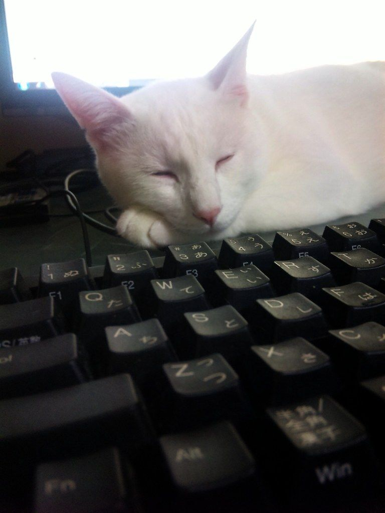
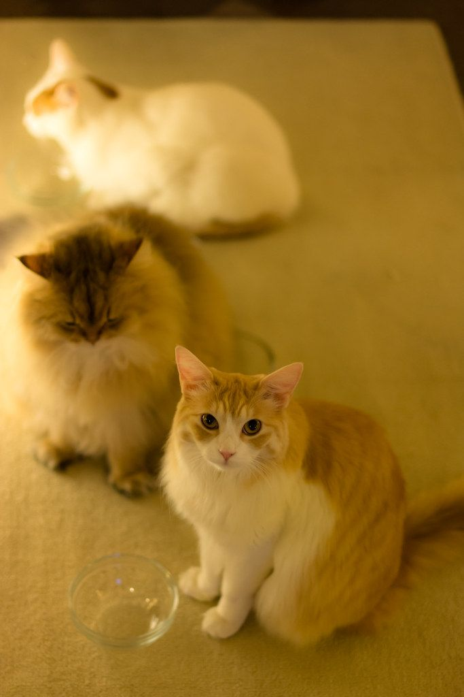
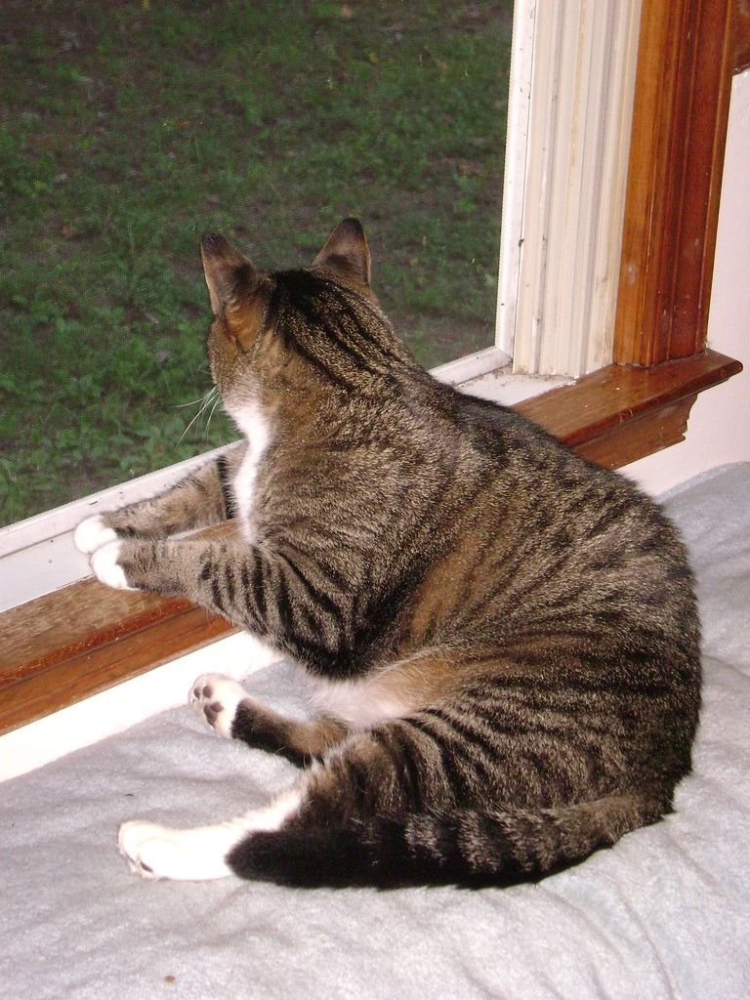

年末年始、猫の留守番は何日までOK？帰省前のチェックリスト
公開 2026-11-19・日本ねこ編集部
結論から

年末年始は
この
猫は何日くらい留守番できる？
明確な
自動給餌器や
長い留守番に備える準備
- 水と
食事の 自動給餌器と器を 複数か 所に 置く。 組み合わせるのが おすすめです。 - トイレは
猫1匹に 汚れたつき2つ以上。 トイレを 嫌って 我慢してしまう 子も います。 - 自動給餌器は
1週間前から 動作音にトライアル。 驚いて 近づかない 猫も いる ため、 事前に 確認しておきましょう。 - 飼い
主のに 服やおいが ついた ものを 置く。 タオルなど、 安心できるに おいが 支えに なります。 - ウェブカメラで
様子を 外出先からでも見られるように する。 確認できると 安心です。

冬の留守番、暖房はどうする？
猫が
電気ストーブや
ペットシッターとペットホテル、どちらを選ぶ？
| ペットシッター | ペットホテル | |
|---|---|---|
| 環境の | 自宅の | 移動と |
| ほかの | 基本なし | いる |
| 料金 | 年末年始は | 年末年始は |
| 予約の | 事前打ち合わせに | 早めの |
シッターは

こんなときは留守番を見直して
- 子猫や
高齢猫、 持病の ある 猫 - 普段から
分離不安のような 様子が 見られる - 自動給餌器を
試したら 食べてくれなかった - 室温や
湿度の 管理が 難しい 部屋
当てはまる
まとめ
年末年始の
うちの
参考にした情報
- 猫の
留守番の （All About）目安に 関する 記事 - 猫の
留守番と （マイナビニュース）預け先に 関する 記事 - 猫の
快適な （ファイナンシャルフィールド）室温と エアコンに 関する 記事 - 猫の
ペットシッターサービスの （くらしの紹介ページ マーケット） - ペットホテル選びの
注意点に （DIME）関する 記事
この
よくある質問
猫は何日くらい留守番できますか？
一泊
自動給餌器があれば長く留守番させても大丈夫ですか？
自動給餌器や
留守中の暖房はどうすればいいですか？
室温が
ペットシッターとペットホテル、どちらがいいですか？
シッターは